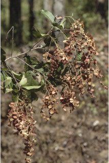
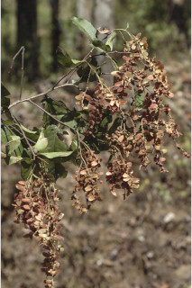

Tamil: Ada maruthu, Peikadukai, Pekarakai, Pilla marudu, Pulvai, Pu marudu, Ven maruthu, Veda marudu Malayalam: Maruthu, Maruthi, Peimaruthu, Pemaruthu, Pemarutu, Pilemardu, Pillamarda, Pillai maruthu, Poomarda, Poomardu, Poomarida, Poomurda, Pulamarada, Pulla maruthu, Pullamarutu, Pumarda, Pumardu, Pumarutha, Pumarutu, Vella maruthu, Vemmaruthu, Ven maruthu Kannada: Hanalu, Honal, Hongal, Honagalu, Honalu, Hulive,Huluvemara, Hunagalu, Maruva, Matti, Ulvi
N/A
Nov. Pl. Sp. 383. 1821; Gamble, Fl. Madras 1: 465. 1997 (re. ed); Sasidharan, Biodiversity documentation for Kerala- Flowering Plants, part 6: 172. 2004; Cook, Fl. Bombay 1: 480. 1902; Saldanha, Fl. Karnataka 2: 51. 1996.


 
